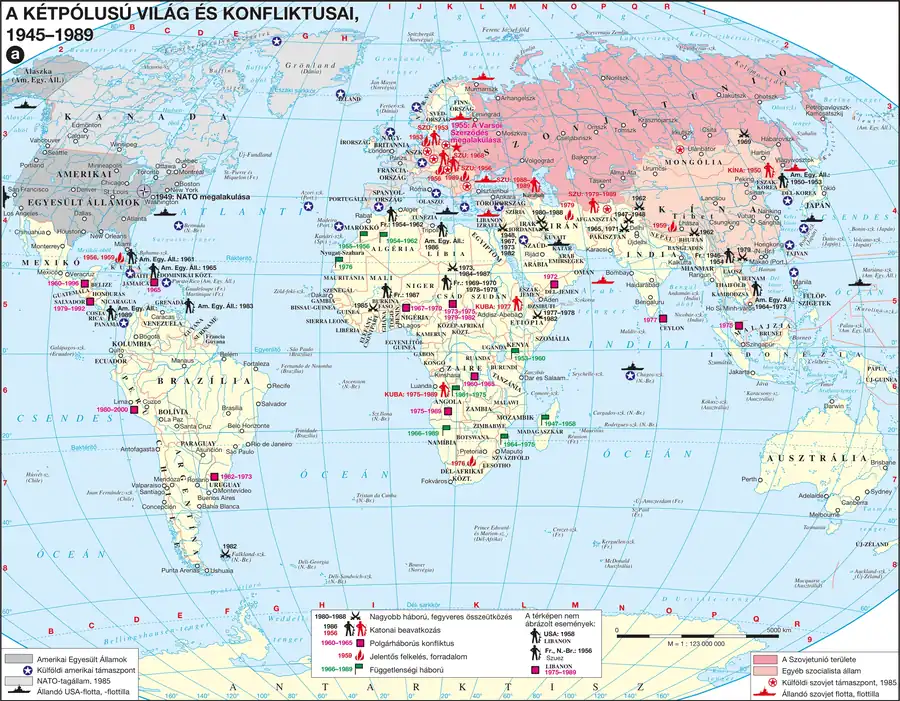

A pártállam helyreállítása
A megtorlással párhuzamosan helyreállították a pártállami struktúrát: az állampárt visszakapta a forradalom előtti szerepét, az országgyűlés ismét eljelentéktelenedett, a választásokon szavazni csak a Hazafias Népfront listájára lehetett. Az elnyomó szerv a Belügyminisztérium (BM) Politikai Nyomozó Főosztálya volt. 1957. február 19-én létrehozták az MSZMP-hez szorosan kötődő fegyveres testületet, a Munkásőrséget. A DISZ helyébe a Kommunista Ifjúsági Szövetség (KISZ) lépett, az iskolás gyerekeknél az alsó tagozaton a kisdobos, felső tagozaton az úttörőmozgalom volt a párt által irányított gyerekszervezet. Az államot a párt, a pártot a Központi Bizottság (KB) irányította, a legfontosabb, legszűkebb testület a Politikai Bizottság (PB) volt — az MSZMP Központi Bizottságának első titkára, Kádár János volt a politikai rendszer meghatározó vezetője 1956 és 1988 között.
A kétfrontos harc és az elvi fordulat
Az MSZMP kétfrontos harcot hirdetett: a dogmatizmus (sztálinista gyakorlat) és a revizionizmus (az állampárti gyakorlat bírálata) ellen egyaránt. A diktatúra „javított” változatának jellemzője, hogy a hatalom már nem igényelte, hogy a polgárok minden nap látványosan azonosuljanak a rendszerrel: az 1961 decemberében meghirdetett „Aki nincs ellenünk, az velünk van” elv a korábbi, nyílt azonosulást követelő gyakorlathoz képest engedékenyebb társadalompolitikát jelzett — a rendszer folyamatosan törekedett az életszínvonal növelésére, ezt a gondoskodó, ugyanakkor függőséget teremtő állami magatartást paternalizmusnak nevezzük.
Vizsgacsapda: az 1961–1962-es konszolidációs fordulat („aki nincs ellenünk, az velünk van”) nem jelentette a diktatúra megszűnését — csupán annyit jelentett, hogy a rendszer már nem várta el a polgárok napi, látványos azonosulását, elegendő volt a passzív, hallgatólagos elfogadás; ez alapvetően különbözik egy valódi demokratizálódástól.
| Fogalmak | Személyek | Kronológia | Topográfia |
|---|---|---|---|
| munkásőrség; Kommunista Ifjúsági Szövetség (KISZ); úttörő | — | 1956–1988 a Kádár-korszak; 1958 Nagy Imre és társainak kivégzése | — |
A kétpólusú világ és konfliktusai, 1945–1989
Magyarország szovjet tömbbeli helye, a Varsói Szerződés rendszere és a korszak nemzetközi erőviszonyai értelmezhetők.

1. forrás — A konszolidáció új elve, 1961–1962 (tartalmi kivonat)
A leírás szerint az 1950-es évek szigorú elve, „Aki nincs velünk, az ellenünk van”, amely mindenkitől aktív, látványos azonosulást várt el a rendszerrel, 1961 végétől fokozatosan átadta helyét egy engedékenyebb elvnek: „Aki nincs ellenünk, az velünk van”. Ez azt jelentette, hogy a hatalom a passzív, hallgatólagos elfogadást is elegendőnek tartotta — nem kellett aktívan bizonyítani a lojalitást, elég volt, ha valaki nem lépett fel nyíltan a rendszer ellen.
a) Mi volt az 1950-es évek szigorú elve?
b) Milyen elv terjedt el 1961 végétől?
c) Mit jelentett ez a gyakorlatban az átlagemberek számára?
Ellenőrző feladatok
Állítás: A választásokon a Kádár-korszakban csak a Hazafias Népfront listájára lehetett szavazni.
Mikor hozták létre a Munkásőrséget?
Egészítsd ki: Kádár János az MSZMP Központi Bizottságának első titkáraként ______-tól ______-ig volt a rendszer meghatározó vezetője.